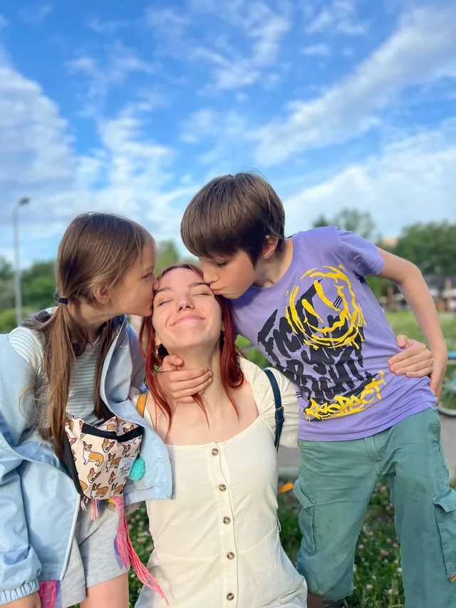
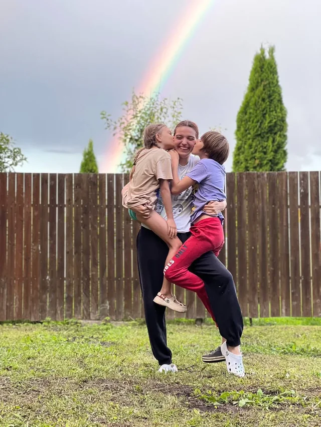
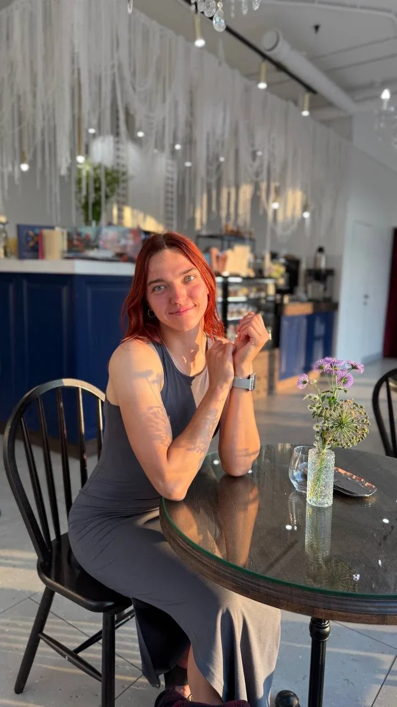
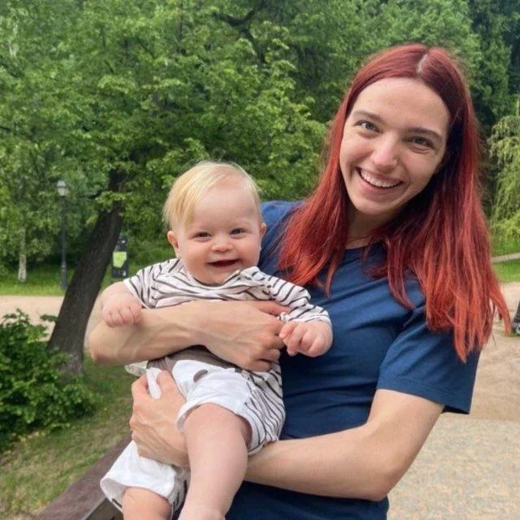

Связанная линия

Подбираю нянь с 2022 года.
Начинала в двух агентствах, а теперь веду каждый подбор лично. За это время провела больше 500 собеседований и помогла найти няню более чем 40 семьям.

Я старшая сестра в многодетной семье.
С 13 лет часто оставалась дома за главную и знаю, как можно любить детей и всё равно уставать. Поэтому на первом разговоре мне важно понять, где вам особенно нужна помощь.

До рекрутинга я пять лет работала няней, тренером и педагогом.
Прошла очную переподготовку на няню-гувернантку и рекрутера по подбору домашнего персонала: больше 400 академических часов с практикой.

Я мастер спорта по регби-7.
Однажды провела собеседование с няней прямо в перерыве между играми. В итоге она подошла семье и работала с ребёнком до детского сада.